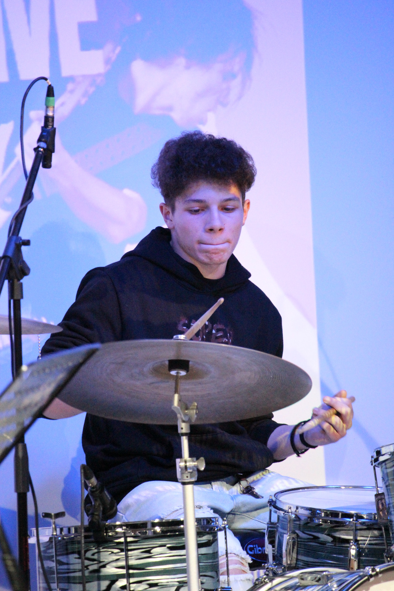

Musica

Musica
La musica è sempre stata e sempre avrà un posto nel mio cuore: mi ha accompagnato in molti momenti della mia vita e mi ha molto aiutato. Ascolto generi molto diversi: passo dal metal più brutale al rap o trap moderna per poi tornare al rock o punk. Tanti generi ma mi rispecchiano uno dopo l'altro. Inoltre suono anche degli strumenti: il principale è la batteria che la suono da una decina di anni e poi negli ultimi anni ho imparato a suonare la chitarra da autodidatta. Di questo percorso strumentale sono molto fiero anche per le band che sto costruendo e portando avanti come fossero miei figli.
Artisti Preferiti
Distant
Invent Animate
Kid Yugi
Whirr